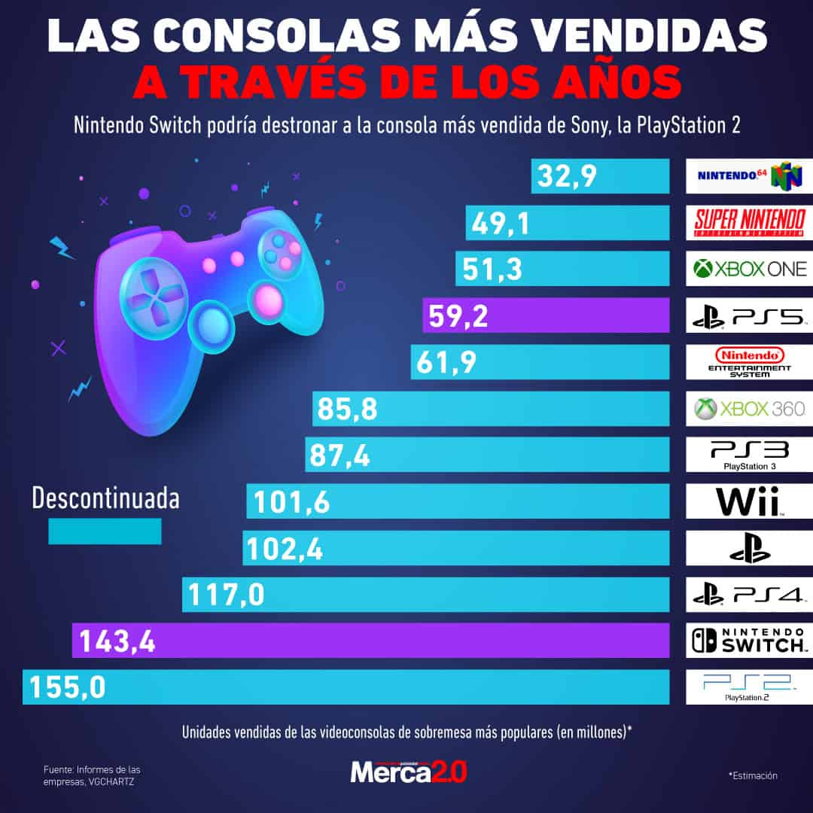

Consoles Històriques i Actuals

Les consoles de videojocs han evolucionat des de simples dispositius amb gràfics bàsics fins a potents sistemes multimèdia.
1. PlayStation 2
La consola més venuda de la història, amb un catàleg immens de jocs.
2. Nintendo Entertainment System (NES)
Va salvar la indústria del videojoc després de la crisi dels anys 80.
3. Super Nintendo (SNES)
Consola icònica amb alguns dels millors jocs de tots els temps.
4. PlayStation Original
Va popularitzar els jocs en CD i el salt definitiu al 3D.
5. Nintendo Switch
Consola híbrida que ha canviat la manera de jugar.
6. Xbox 360
Va impulsar el joc online i els serveis digitals a consola.
7. Game Boy
La portàtil que va portar els videojocs a tot arreu.
8. PlayStation 4
Gran èxit de vendes amb jocs exclusius de molta qualitat.
9. Sega Mega Drive
La gran rival de Nintendo als anys 90.
10. Xbox Series X
Una de les consoles més potents mai creades.